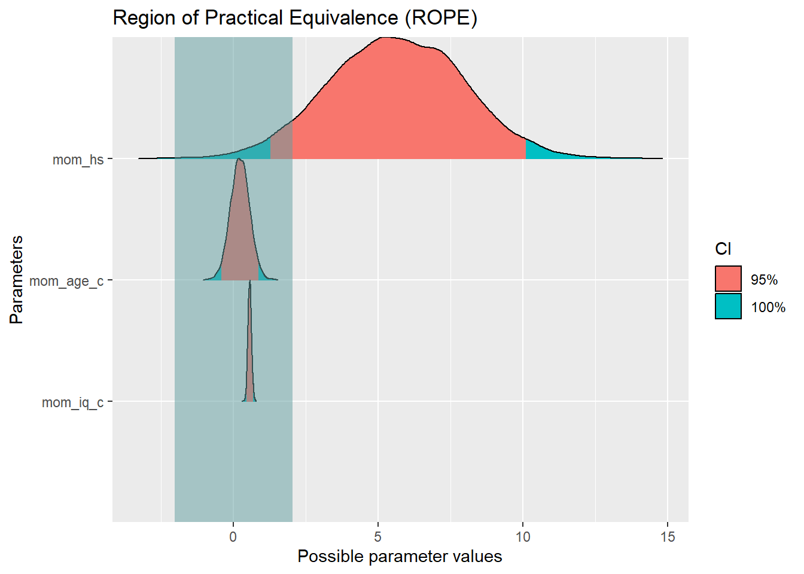
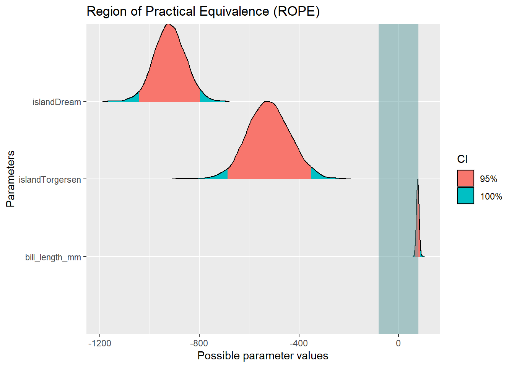

data(kidiq)
set.seed(42)
m1 <- stan_glm(kid_score ~ mom_hs, data = kidiq, refresh = 0)
parameters(m1)7 Forschungsfragen mit metrischer AV
Warning
Hinweis: Achtung, die Ergebnisse können selbst mit set.seed() etwas varieren!
7.1 Aufgabe 1
Der Datensatz kidiq dient als Grundlage zur Beantwortung der folgenden Aufgabe. Er findet sich im Paket rstanarm. Informationen zum Datensatz lassen sich mit der Funktion ?rstanarm( ) ausgeben.
Stellen Sie ein Modell auf, dass den IQ eines Kindes anhand des Highschoolabschluss der Mutter vorhersagt.
AV - kid_score UV - mom_hs
Wie groß ist der mediane Unterschied zwischen dem mittleren IQ, wenn man die Kinder von einer Mutter mit und einer Mutter ohne Highschoolabschluss vergleicht?
Der mediane Unterschied im mittleren IQ der Kinder von einer Mutter mit und einer Mutter ohne Highschoolabschluss beträgt laut dem Modell 11.75.
Berechnen Sie dieses Modell:
AV - kid_score UV - mom_hs, mom_age, mom_iq
Wie breit ist das 90-Prozent-HDI, das den Unterschied zwischen der mittleren Intelligenz von Kindern zeigt, wenn diese von zwei Müttern verschiedenen Highschoolabschlusses, gleichen Alters und gleicher Intelligenz stammen?
set.seed(42)
m6 <- stan_glm(kid_score ~ mom_hs + mom_age + mom_iq, data = kidiq, refresh = 0)
hdi(m6, ci = .9) %>%
mutate(width = CI_high - CI_low)Der Unterschied zwischen der mittleren Intelligenz von Kindern, wenn deren Mütter verschiedene Abschlüsse, aber gleichen Alters und gleicher Intelligenz sind, beträgt 7.42.
Zentrieren Sie die Prädiktoren mom_age und mom_iq und erstellen Sie das genannte Modell mit diesen zentrierten Prädiktoren.
kidiq2 <-
kidiq%>%
mutate(mom_age_c = mom_age - mean(mom_age),
mom_iq_c = mom_iq - mean(mom_iq))
set.seed(42)
m6b <- stan_glm(kid_score ~ mom_hs + mom_age_c + mom_iq_c, data = kidiq2, refresh = 0)Wie groß ist die Wahrscheinlichkeit, dass der mittlere IQ eines Kindes größer ist als 85, wenn die Mutter KEINEN Highschoolabschluss sowie durchschnittliches Alter und IQ hat?
m6b%>%
as_tibble()%>%
count(`(Intercept)` > 85)%>%
mutate(Anteil = n / sum(n))Die Wahrscheinlichkeit, dass die gefragten Bedingungen zustimmen, liegt bei ca. 9,4 Prozent.
Wie groß ist die Wahrscheinlichkeit, dass der mittlere IQ eines Kindes größer ist als 85, wenn die Mutter EINEN Highschoolabschluss sowie durchschnittliches Alter und IQ hat?
m6btab <- m6b%>%
as_tibble()%>%
mutate(Mit_Highschoolabschluss = `(Intercept)` + mom_hs) Wir steigern an dieser Stelle nur Mom_hs vom Ausgangspunkt “kein HS-Abschluss” (x = 0 -> Intercept) zum gewünschten Wert “mit HS-Abschluss (x = 1; Intercept + Koeffizient). Alle anderen Variablen bleiben konstant, d.h. dadurch, dass sie zentriert sind, entsprechen sie dem Durchschnitt.
m6btab%>%
count(Mit_Highschoolabschluss > 85)%>%
mutate(Anteil = n / sum(n))Die Wahrscheinlichkeit, dass ein Kind von einer Mutter mit HS-Abschluss, die ein durchschnittliches Alter sowie durchschnittlichen IQ hat, einen mittleren IQ hat, der höher ist als 85, liegt bei ca. 99.9 Prozent.
Betrachten Sie nur den den Prädiktor mom_hs. Wie viel Prozent der Verteilung liegen außerhalb des ROPEs?
Können wir uns laut der vorgeschlagenen ROPE-Entscheidungsregel von Kruschke sicher sein, dass der Unterschied zwischen der mittleren Intelligenz von Kindern einer Mutter ohne bzw. mit Highschoolabschluss signifikant ist?
rope(m6b)plot(rope(m6b))
Außerhalb des Ropes liegen 96,53 Prozent. Dementsprechend können wir uns laut der ROPE-Entscheidungsregel von Kruschke sicher sein, dass der gefragte Unterschied (kid_score|mom_hs = 0 vs. kid_score|mom_hs = 1) signifikant ist.
7.2 Aufgabe 2
Beziehen Sie für die folgende Aufgabe den Datensatz penguins von dieser Plattform: https://vincentarelbundock.github.io/Rdatasets/articles/data.html
Stellen Sie ein Modell auf, dass das Körpergewicht der Pinguine anhand der Ursprungsinsel der Pinguine vorhersagt.
AV - body_mass_g UV - island
Unterscheiden sich die Pinguine von Biscoe-Island in ihrer Größe signifikant von den Pinguinen, die auf den anderen Inseln beheimatet sind?
o Ja o Nein
penguins <- read_csv("https://vincentarelbundock.github.io/Rdatasets/csv/palmerpenguins/penguins.csv")Rows: 344 Columns: 9
-- Column specification --------------------------------------------------------
Delimiter: ","
chr (3): species, island, sex
dbl (6): rownames, bill_length_mm, bill_depth_mm, flipper_length_mm, body_ma...
i Use `spec()` to retrieve the full column specification for this data.
i Specify the column types or set `show_col_types = FALSE` to quiet this message.set.seed(42)
m2 <- stan_glm(body_mass_g ~ island, data = penguins, refresh = 0)
m2stan_glm
family: gaussian [identity]
formula: body_mass_g ~ island
observations: 342
predictors: 3
------
Median MAD_SD
(Intercept) 4717.1 46.6
islandDream -1004.6 76.1
islandTorgersen -1009.6 99.1
Auxiliary parameter(s):
Median MAD_SD
sigma 627.1 23.8
------
* For help interpreting the printed output see ?print.stanreg
* For info on the priors used see ?prior_summary.stanregWir können sehen, dass die Referenzkategorie Biscoe-Island sein muss, da die anderen beiden Inseln uns als Modellkoeffizienten gezeigt werden. Um zu prüfen, ob der Unterschied im Körpergewicht groß genug ist, schauen wir, ob die Null (der Median des Interceps, also 4717.1) in den ersten zwei Standardabweichungen (95 Prozent der Verteilung, also -1004.6 +/- 2* 76.1 bzw. -1009.6 +/- 2* 99.1) der anderen Koeffizienten liegt.
Wir sehen, dass “die Null” das nicht tut, somit schätzen wir, dass der Unterschied des Körpergewichts der Pinguine der Biscoe-Inseln ausreichend groß sein muss.
Entsprechend ist die richtige Antwort:
o Ja
7.2.1 Aufgabe 2b)
Beziehen Sie für die folgende Aufgabe den Datensatz penguins von dieser Plattform: https://vincentarelbundock.github.io/Rdatasets/articles/data.html
Berechnen Sie das folgende Modell
AV - body_mass_g UVs - island, bill_length_mm
Im Folgenden wird der Prädiktor island genauer betrachtet.
Wie groß ist der Anteil der Verteilung der Torgersen-Insel, der innerhalb des ROPEs liegt?
(Runden Sie auf zwei Stellen)
set.seed(42)
m3 <- stan_glm(body_mass_g ~ island + bill_length_mm, data = penguins, refresh = 0)
m3stan_glm
family: gaussian [identity]
formula: body_mass_g ~ island + bill_length_mm
observations: 342
predictors: 4
------
Median MAD_SD
(Intercept) 1227.8 246.3
islandDream -919.2 61.2
islandTorgersen -522.4 84.5
bill_length_mm 77.1 5.3
Auxiliary parameter(s):
Median MAD_SD
sigma 493.8 19.3
------
* For help interpreting the printed output see ?print.stanreg
* For info on the priors used see ?prior_summary.stanregrope(m3)plot(rope(m3))
Der Anteil der innerhalb des ROPEs liegt beträgt 0,00.
7.2.2 Aufgabe 2 c)
Beziehen Sie für die folgende Aufgabe den Datensatz penguins von dieser Plattform: https://vincentarelbundock.github.io/Rdatasets/articles/data.html
Berechnen Sie das folgende Modell
AV - body_mass_g UVs - island, bill_length_mm
Im Folgenden wird der Prädiktor island genauer betrachtet.
Wie groß ist der Anteil der Verteilung der Torgersen-Insel, der innerhalb des ROPEs liegt?
(Runden Sie auf zwei Stellen)
Berechnen Sie folgendes Modell:
AV - body_mass_g UV - bill_length_mm
Was ist der Wert des Punktschätzers für eine Beobachtung, bei der alle Prädiktoren den Wert 3 aufweisen?
- 905.3
- 1339.7
- 633.4
- 265.3
set.seed(42)
m4 <- stan_glm(body_mass_g ~ bill_length_mm, data = penguins, refresh = 0)
m4stan_glm
family: gaussian [identity]
formula: body_mass_g ~ bill_length_mm
observations: 342
predictors: 2
------
Median MAD_SD
(Intercept) 371.5 279.0
bill_length_mm 87.3 6.4
Auxiliary parameter(s):
Median MAD_SD
sigma 646.3 24.2
------
* For help interpreting the printed output see ?print.stanreg
* For info on the priors used see ?prior_summary.stanreg371.5 + 3*87.3 [1] 633.47.3 Aufgabe 3
Der Datensatz mtcars dient als Grundlage zur Beantwortung der folgenden Aufgabe. Er findet sich im Paket tidyverse. Informationen zum Datensatz lassen sich mit der Funktion ?mtcars ausgeben.
Berechnen Sie folgendes Modell: AV → mpg UV → wt, drat, disp Welcher der Prädiktoren hat statistisch gesehen den stärksten negativen Effekt auf die Zielvariable? - Wt - Drat - Disp
data(mtcars)
set.seed(42)
m5 <- stan_glm(mpg ~ wt + drat + disp, data = mtcars, refresh = 0)
m5stan_glm
family: gaussian [identity]
formula: mpg ~ wt + drat + disp
observations: 32
predictors: 4
------
Median MAD_SD
(Intercept) 31.2 7.4
wt -3.1 1.2
drat 0.8 1.5
disp 0.0 0.0
Auxiliary parameter(s):
Median MAD_SD
sigma 3.0 0.4
------
* For help interpreting the printed output see ?print.stanreg
* For info on the priors used see ?prior_summary.stanregAnhand der Koeffizienten lässt sich noch nicht sagen, welcher Effekt der stärkste ist, da die Prädiktoren auf verschiedenen Skalen rechnen. Das bedeutet, dass eine Steigerung von x um eine Einheit, nicht für alle Prädiktoren gleich groß ist (siehe Z-Standardisieren).
Aus dem genannten Grund, müssen wir die Prädiktoren z-standardisieren, so dass die Einheiten der einzelnen Prädiktoren vergleichbar werden.
mtcars2 <-
mtcars%>%
mutate(wt_z = scale(wt),
drat_z = scale(drat),
disp_z = scale(disp))
set.seed(42)
m5b <- stan_glm(mpg ~ wt_z + drat_z + disp_z, data = mtcars2, refresh = 0)
m5bstan_glm
family: gaussian [identity]
formula: mpg ~ wt_z + drat_z + disp_z
observations: 32
predictors: 4
------
Median MAD_SD
(Intercept) 20.1 0.5
wt_z -3.1 1.2
drat_z 0.4 0.8
disp_z -2.1 1.2
Auxiliary parameter(s):
Median MAD_SD
sigma 3.0 0.4
------
* For help interpreting the printed output see ?print.stanreg
* For info on the priors used see ?prior_summary.stanregDer Prädiktor mit dem stärksten negativen Effekt auf den Spritverbrauch ist wt.
7.4 Codesammlung
Tipps für eine Codesammlung
Rope anzeigen & plotten
rope(m1)
plot(rope(m1))Variablen z-standardisieren
data%>%
mutate(uv1_z = scale(uv1),
uv2_z = scale(uv2),
uv3_z = scale(uv3))